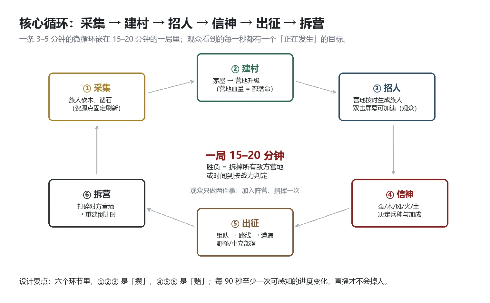
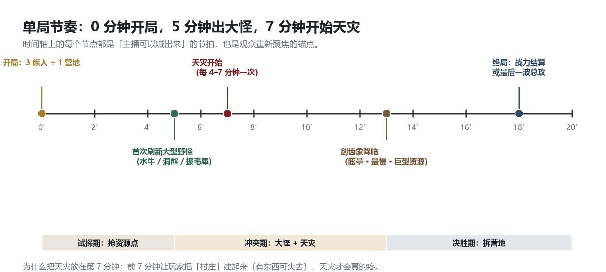
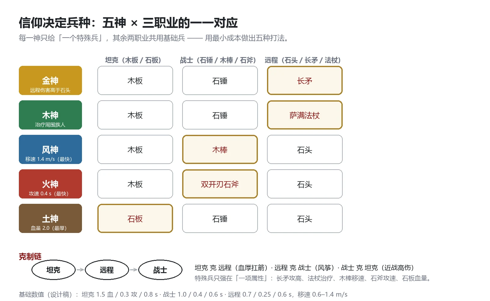
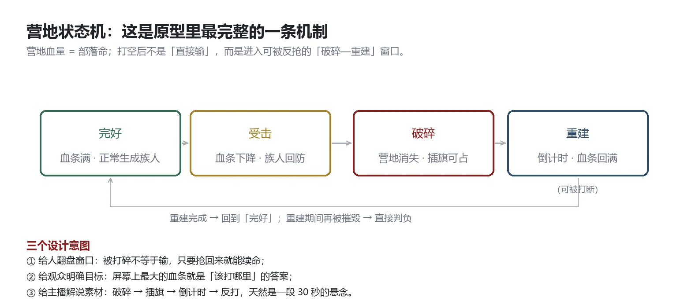
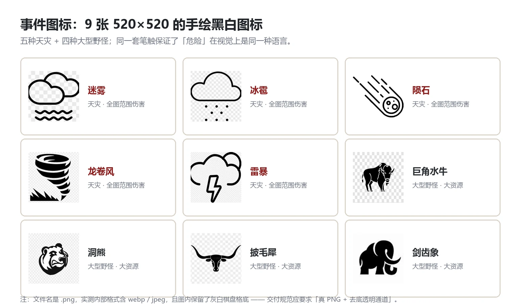
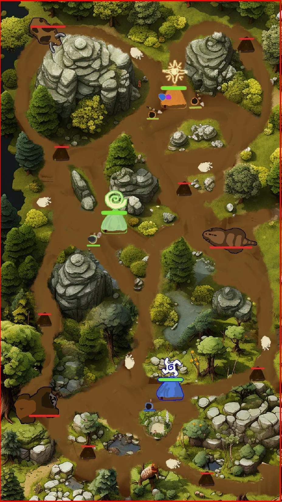
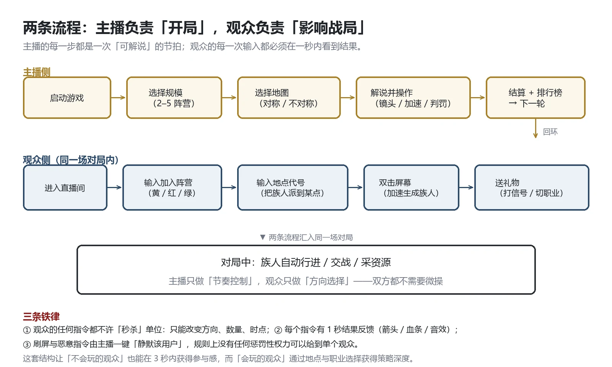
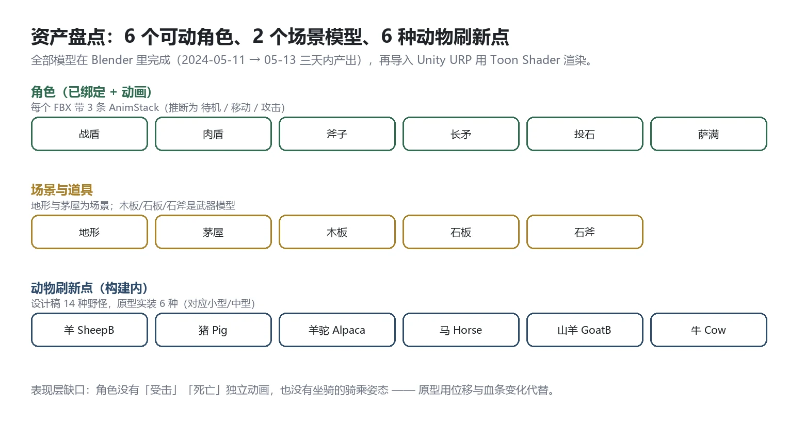

Document / 文档档案
- 项目
- 《部落神话》（Unity 原型 + 设计表，2024-05 于 Gamejam 产出）
- 文档性质
- 完整设计文案 + 原型现状审计：设计部分可直接开发，审计部分说明"现在到哪一步"
- 证据分级
- A＝可直接复核；B＝项目文档；C＝我的推断
- 阅读路线
- 面试/评审看第 1、3、9、12 章；程序看第 4、5、12 章；美术看第 2、6、8 章；运营看第 9、11 章
SECTION 0这份策划案解决什么问题
0.1一句话产品定义
《部落神话》是一款“主播当局、观众入局”的多人小规模战争游戏：2–5 个信仰部落（金/木/风/火/土）在一片丛林地图里抢资源、驯野兽、拆对方营地；一局 15–20 分钟，主播负责开局的规模与地图选择、局中的节奏控制与解说，观众通过直播间指令加入阵营、指定地点、加速生成族人、送礼物切换职业。
它不是传统 RTS，也不是纯弹幕互动游戏，而是“可解说的战争”：所有规则都为“主播能讲、观众能懂、10 秒内能看懂发生了什么”服务。
0.2三条自我约束
- 不为深度牺牲可看性。 单位自动行进、自动交战，玩家不下达“微操”命令，只下达“方向、数量、时点”三类宏观指令。
- 胜负必须能被观众复述。 结算界面只有两行字能解释结果：谁拆了谁的营地 或 谁的战力更高。
- 任何一个数字都要能落到表里。 本策划案的数值全部来自 xlsx 原表或由原表推导（第 4 章给出 DPS/EHP 推导），改动建议会标明“建议”。
0.3原型现状速览（详见第 12 章）
- 已完成：一张可运行的丛林对战场景、营地（含碎裂与重建状态）、族人自动生成与指令、6 种动物刷新点、3 个信仰（金/木/土）、Cinemachine 跟随相机、基础 UI 仪表盘。
- 未完成：首页 / 选择规模 / 选择地图 / 结算 / 排行榜五个界面、风神与火神、天灾系统、坐骑与跟随作战、5 阵营地图、直播指令接入。
- 一句话结论：战斗内核跑通了，仪式感（开局、天灾、结算）全缺——而这类游戏 80% 的观看体验来自仪式感。
0.4全文结构与读法
| 章节 | 回答的问题 | 谁会重点看 |
|---|---|---|
| 1 产品概述 | 这是什么游戏、给谁玩、一局多长 | 所有人 |
| 2 世界观与信仰 | 五个神分别让玩家强在哪 | 主美 / 叙事 |
| 3 核心循环与节奏 | 一局里每一分钟在干什么 | 策划 / 主程 |
| 4 单位与战斗数值 | 兵种强弱的数字依据 | 策划 / 数值 |
| 5 营地与占领 | 战局进度怎么被看见 | 程序 |
| 6 野怪与坐骑 | 地图上的移动资源怎么抢 | 策划 / 美术 |
| 7 天灾事件 | 中盘靠什么搅局 | 策划 / 演出 |
| 8 地图与规模 | 2–5 阵营怎么摆 | 关卡 / 美术 |
| 9 直播互动层 | 观众的输入怎么变成战局 | 制作人 / 运营 |
| 10 界面与流程 | 有哪几个界面、HUD 看什么 | UI / 程序 |
| 11 胜负与结算 | 怎么算赢、战力怎么算 | 策划 / 运营 |
| 12 原型现状与差距 | 现在到哪一步、还差什么 | 所有人（最重要） |
| 13–14 计划与风险 | 4 周怎么补完、会踩什么坑 | 制作人 |
SECTION 1产品概述
1.1基本信息
| 名称 | 部落神话（TRIBAL MYTH） |
| 类型 | 多人小规模战争 + 直播互动（RTS-Lite / Spectator-driven） |
| 平台 | PC（Windows，Unity URP）；直播平台挂件/弹幕接入为第二阶段 |
| 人数 | 主播 1 + 观众不限（按阵营分为 2–5 组） |
| 单局时长 | 15–20 分钟（设计目标），原型当前约 8–12 分钟（无天灾与大怪驱动） |
| 核心卖点 | ① 神选即兵种树（5 神 × 3 职业）② 营地血条即战局进度条 ③ 天灾把 PVP 挫败转嫁给世界 |
| 对标 | 《Northgard》的部落经营感 × 《星际争霸》的克制关系 × 直播互动游戏的“3 秒参与” |
1.2目标用户与场景
| 用户 | 画像 | 他们要看/玩什么 |
|---|---|---|
| 主播（第一用户） | 中型游戏主播，50–2000 在线 | 一场能讲 15 分钟、有起伏、能造梗的“战争节目” |
| 参与型观众 | 爱互动、想被念名字 | 加入阵营、被主播读到、看到自己的族人打赢 |
| 围观型观众 | 只看不参与 | 一眼看懂谁领先、天灾什么时候来 |
| 战术型观众 | 爱算 | 地点选择、职业搭配、野怪时机 |
1.3一局游戏的三幕
- 第一幕（0–5′）立村：采集、建茅屋、招人；让观众在 90 秒内看到“我的阵营在动”。
- 第二幕（5–13′）出兽与天灾：大型野怪刷新、7′ 起天灾降临；制造第一波意外，主播有东西可讲。
- 第三幕（13–20′）拆营：剑齿象降临、营地互拆、战力结算；给一个明确的终点和可复述的结果。
SECTION 2世界观与信仰系统
2.1世界观：一场被神观看的部落战争
史前的丛林中，五个部落各自侍奉一位神。神不直接降临，只通过图腾（营地中央的神像）赐予族人特质：金的族人磨得更锋利，木的族人懂得草药，风的族人跑得更快，火的族人战意更盛，土的族人皮更厚。
每个部落的目标是把别的部落的图腾打碎——因为神只看谁的信徒还站着。
2.2五神与阵营颜色
| 信仰 | 神名 | 颜色 | 气质（原表用词） | 战斗加成 | 特殊兵 |
|---|---|---|---|---|---|
| 金 | 赫利俄斯 Helios | 黄 | 金属锐利 | 攻击力强 | 长矛（投掷伤害高于石头） |
| 木 | 德墨忒尔 Demeter | 绿 | 植物倔强 | 会治疗 | 萨满法杖（治疗周围族人） |
| 风 | 阿努米特尔 Anemoi | 蓝 | 急速飓风 | 移速快 | 木棒（战士，移速最快） |
| 火 | 赫菲斯托斯 Hephaestus | 红 | 狂热燃烧 | 攻速高 | 双开刃石斧（战士，攻速最快） |
| 土 | 盖亚 Gaia | 棕 | 厚实泥土 | 血量高 | 石板（坦克，血量最厚） |
| 无 | — | 灰 | — | — | 中立部落 / 未选择信仰时的占位 |
设计要点：五个神的加成全部落在同一组属性轴上（攻击 / 治疗 / 移速 / 攻速 / 血量），所以五个阵营之间是“同构不同调”，不需要为每个神写一套独立机制。这是小团队做 5 个阵营的唯一可行做法。
2.3神选的代价与机会
- 开局固定：阵营的神在选规模/选地图阶段确定，局中不可改（避免“中途换神”带来的平衡崩坏）。
- 兵种锁定：每神给 1 个特殊兵，其余两个职业使用共用基础兵（木板 / 石锤 / 石头）。所以五个阵营的差异是“一个位置换成什么”，而不是“三套完全不同的兵种表”。
- 中立部落：地图上的中立营地信“无”，被击败后可获得少量战力（见第 11 章战力公式），是前期唯一的“外部扩张”。
SECTION 3核心循环与单局节奏
3.1核心循环：六步

点击放大 ↗| 环节 | 玩家/观众做什么 | 系统给什么反馈 | 对应时长 |
|---|---|---|---|
| ① 采集 | 族人自动砍木、凿石（资源点固定刷新） | 资源数字跳动 + 采集音效 | 持续 |
| ② 建村 | 消耗资源把茅屋升级为营地设施 | 营地模型逐级变化、营地血量上限提升 | 每次 10–30 秒 |
| ③ 招人 | 营地按时间自动生成族人；观众双击屏幕加速 | 族人从营地走出、头顶显示所属阵营色 | 每 5–10 秒 1 名 |
| ④ 信神 | 选择/巩固信仰（开局已定，局中体现为祭坛加成） | 图腾发光、族人外观/属性变化 | 一次性 |
| ⑤ 出征 | 组队 → 选路线 → 遭遇野怪/中立部落/敌军 | 交战动画、血条、击杀播报 | 每次 1–3 分钟 |
| ⑥ 拆营 | 打碎对方营地 | 营地碎裂、插旗、重建倒计时 | 决胜段 |
为什么是六步而不是更少：三个“攒”的环节（采集/建村/招人）保证主播有稳定的解说素材，三个“赌”的环节（信神/出征/拆营）保证每 3–5 分钟有一次真正的风险决策。缺了任一侧，要么无聊，要么无法解说。
3.2单局时间轴

点击放大 ↗| 时间 | 事件 | 设计目的 |
|---|---|---|
| 0′ | 开局：每阵营 3 名族人 + 1 座营地 | 让观众立刻看到“我的阵营已经有东西了” |
| 0–3′ | 采集期，资源点开放 | 低压力，给主播介绍规则的时间窗 |
| 3′ | 第一波小野怪（山羊/野猪/野鹿/鸵鸟） | 第一次交战的爽点，也是驯化教学 |
| 5′ | 大型野怪出现（巨角水牛 / 洞熊 / 披毛犀），每 4 分钟刷新 | 制造“要不要去抢”的阵营级决策 |
| 7′ | 天灾系统开启（每 3–7 分钟一次） | 中盘搅局，把领先者的优势打散 |
| 13′ | 剑齿象降临（每 8 分钟刷新） | 巨兽 = 会走路的营地，谁抢到谁翻盘 |
| 18–20′ | 终局：拆光对方营地，或时间到按战力结算 | 必须有明确终点，直播才能“收” |
3.3单局时长的三个锚点
- 观众决策频率：每 30 秒至少有一次“可参与”的选择（加入、地点、加速、礼物），否则弹幕会掉。
- 主播解说节拍：每 90 秒必须有一个“可以喊出来”的事件（大怪刷新、天灾、拆营、驯化）。
- 战局信息刷新：屏幕上的战力差、营地血条、天灾倒计时，任一时刻至少有一个在变化。
SECTION 4族人单位与战斗数值
4.1五神 × 三职业矩阵

点击放大 ↗职业三角：坦克 克 远程 · 远程 克 战士 · 战士 克 坦克（近战高伤克制厚甲，厚甲扛箭，风筝打法克制近战）。
4.2兵种数值（设计稿原表）
| 兵种 | 职业 | 所属 | 血量 | 攻击 | 攻速(s/次) | 移速(m/s) | 射程(m) | 技能 |
|---|---|---|---|---|---|---|---|---|
| 木板 | 坦克 | 全部 | 1.5 | 0.3 | 0.8 | 0.65 | 0.1 | 无 |
| 石板 | 坦克 | 土神专属 | 2.0 | 0.3 | 0.8 | 0.6 | 0.1 | 无（血最厚） |
| 石锤 | 战士 | 全部 | 1.0 | 0.4 | 0.6 | 1.0 | 0.1 | 无 |
| 木棒 | 战士 | 风神专属 | 1.0 | 0.3 | 0.5 | 1.4 | 0.1 | 无（移速最快） |
| 双开刃石斧 | 战士 | 火神专属 | 1.0 | 0.4 | 0.4 | 1.0 | 0.1 | 无（攻速最快） |
| 石头 | 远程 | 全部 | 0.7 | 0.25 | 0.6 | 0.8 | 1.0 | 无 |
| 长矛 | 远程 | 金神专属 | 0.7 | 0.4 | 0.6 | 0.8 | 1.0 | 投掷伤害高于石头 |
| 萨满法杖 | 远程 | 木神专属 | 0.7 | 0.2 | 0.6 | 0.8 | 1.0 | 治疗周围族人 |
4.3由原表推导的 DPS 与有效生命
| 兵种 | 单次伤害 | DPS（攻击÷攻速） | 有效生命（血量×职业减伤假设） | 定位 |
|---|---|---|---|---|
| 木板 | 0.30 | 0.375 | 1.50 | 标准前排 |
| 石板 | 0.30 | 0.375 | 2.00 | 纯肉盾，拖时间 |
| 石锤 | 0.40 | 0.667 | 1.00 | 标准输出 |
| 木棒 | 0.30 | 0.600 | 1.00 | 高机动，追杀后排 |
| 双开刃石斧 | 0.40 | 1.000 | 1.00 | 最高输出 |
| 石头 | 0.25 | 0.417 | 0.70 | 便宜的量产远程 |
| 长矛 | 0.40 | 0.667 | 0.70 | 高质量远程 |
| 萨满法杖 | 0.20 | 0.333 | 0.70 | 治疗型辅助 |
4.4编队与指令（观众可参与的粒度）
| 指令 | 发出者 | 粒度 | 效果 | 反制 |
|---|---|---|---|---|
| 加入阵营 | 观众（弹幕） | 每人一次 | 该阵营族人 +1 生成速度 | 主播可限制每阵营人数上限 |
| 地点代号 | 观众（弹幕） | 每 10 秒一次 | 把一队族人派往地图某编号点 | 主播可覆盖/否决 |
| 双击屏幕 | 观众（任意） | 无冷却但限频 | 该阵营当前生成队列 +1 秒进度 | 系统限频（每秒最多生效 3 次） |
| 礼物：打信号 | 观众（付费） | 每次 1 发 | 在地图标出敌方集结地 | 只能看，不能改指令 |
| 礼物：切职业 | 观众（付费） | 每次 1 队 | 把一队族人换成该阵营特殊兵 | 有冷却与数量上限 |
为什么观众只能改“方向、数量、时点”：这三类信息不会因为人数增多而失效（500 人一起点“去 3 号点”仍然是同一个结果），而“具体走位”会在人多时变成噪声。
SECTION 5营地、建筑与占领
5.1营地 = 部落的命
一款 15 分钟的战争游戏必须让“战局进度”在一眼之内可读。本作把它压缩成地图上的营地血条：营地血量归零 ≠ 立刻失败，而是进入“破碎”状态，给对手一个插旗窗口，也给自己一个反抢的机会。

点击放大 ↗| 状态 | 触发 | 系统行为 | 观众看到什么 |
|---|---|---|---|
| 完好 | 初始 / 重建完成 | 血条满，正常生成族人 | 头顶绿色血条 + 图腾发光 |
| 受击 | 被攻击 | 血条下降，族人回防 | 血条闪烁、营地冒烟 |
| 破碎 | 血量归零 | 营地模型碎裂、插旗点出现、开始重建倒计时 | 一堆碎石 + 一面旗 + 倒计时 |
| 重建 | 倒计时结束 | 血条回满、恢复生成 | 营地重新立起，图腾亮起 |
| 判负 | 重建期间再次被摧毁 | 该阵营出局 | 全屏播报 + 该色从地图消失 |
5.2建筑与升级
| 建筑 | 作用 | 升级方向 | 成本（建议） |
|---|---|---|---|
| 茅屋 | 族人住所，决定人口上限 | Lv1 3 人 → Lv2 6 人 → Lv3 9 人 | 木 30 / 60 |
| 祭坛 | 信仰加成载体，被拆则失去特殊兵 | 只能修不能升 | 石 40 |
| 图腾 | 营地核心，血量本体 | 修复（消耗石） | 石 20 / 次 |
设计意图：建筑只保留 3 种。小团队做不出《Northgard》式的建筑树，而“人口上限”和“信仰加成”已经足够制造决策。
5.3原型里的营地证据
构建产物中 营地 与 破碎 各出现 46 次、TribesCollapseReBuildBloodImage / Timer / FlagTime / _Image 各 46 个、TargetFlagTransObj 46 个——说明原型的营地系统是按 46 个营地 + 46 套血条/倒计时/旗帜批量生成的，这套数据结构可以直接扩展成 5 阵营地图（证据级 A）。
SECTION 6野怪、坐骑与资源
6.1野怪四级
野怪不是“可以打的怪”，而是地图上的移动资源点：小型与中型可被驯化为坐骑，大型与巨型被驯化后跟随作战。
| 级别 | 代表 | 特性 | 驯化后 | 刷新节奏 | 血量 | 攻击 | 攻速 | 移速 | 射程 |
|---|---|---|---|---|---|---|---|---|---|
| 小 | 野山羊 / 野猪 / 野鹿 / 鸵鸟 | 普通、无技能 | 坐骑（快） | 快 | 3 | 0.3 | 0.5 | 1.2 | 0.1 |
| 中 | 三趾马 | 灵活，移速快 | 坐骑（中） | 中 | 8 | 0.4 | 0.5 | 2.0 | 0.2 |
| 中 | 原野牛 | 强壮，撞击 | 坐骑（中） | 中 | 8 | 0.4 | 0.5 | 1.5 | 0.2 |
| 中 | 巨型石蜥 | 抗揍，旋转击退 | 坐骑（中） | 中 | 10 | 0.4 | 0.7 | 1.0 | 0.2 |
| 中 | 巨猿 | 善战，重击前方 AOE | 坐骑（中） | 中 | 8 | 0.4 | 0.5 | 1.5 | 0.2 |
| 中 | 华南巨貘 | 控制，吸引前方 | 坐骑（中） | 中 | 8 | 0.4 | 0.6 | 1.5 | 0.2 |
| 大 | 巨角水牛 / 洞熊 / 披毛犀 | 坦克，伤害高血高 | 跟随作战 | 慢 | 17 | 0.4 | 0.5 | 1.5 | 0.2 |
| 巨 | 剑齿象 | 控制坦克，攻击带眩晕 | 跟随作战（最慢） | 阶段降临 | 30 | 0.5 | 0.7 | 1.5 | 0.4 |
- 刷新规则（原表）：巨角水牛 / 洞熊 / 披毛犀在开局 5 分钟后出现，每 4 分钟刷新；剑齿象 13 分钟后出现，每 8 分钟刷新。
- 数值含义：一只剑齿象 30 血、DPS 0.71 且带范围眩晕——相当于一个会走路的营地。抢到它的一方在终局阶段有压倒性优势，这就是“巨兽即翻盘点”。
6.2驯化机制（建议细化）
原表只写了“制服后＝坐骑/跟随作战”，没有给驯化过程。建议如下（低成本实现）：
- 野怪血量打到 20% 以下时进入驯服窗口（头顶出现绳索图标）。
- 派任意族人靠近并保持 3 秒，即完成驯化；期间被打断则野怪回血 30%。
- 坐骑提供移速加成（+30%）与冲锋技能；跟随作战提供额外输出，但会吃掉玩家的族人名额。
- 每阵营同时最多拥有 2 只驯化单位——防止后期变成“动物园大战”。
SECTION 7天灾事件
7.1五种天灾
天灾是不可归咎的裁判：它同时伤害所有人，因此玩家不会把失败归因于某个对手或系统，而是归因于“运气”。这是长局 PVP 里最便宜的情绪调节器。
| 天灾 | 起始 | 持续 | 效果 | 反制手段 | 对直播的价值 |
|---|---|---|---|---|---|
| 迷雾 | 7 分钟后 | 10–20s | 遮蔽全屏视野 | 派族人上高地、听音效判断 | 观众报点，弹幕活跃度峰值 |
| 冰雹 | 7 分钟后 | 5–10s | 全图少量伤害（战士血槽 ×1/3 每下） | 分散、躲进茅屋 | 慢刀子，逼所有人回防 |
| 大陨石 | 7 分钟后 | 0s（瞬间） | 范围致死 + 遗留陨石堵路 | 别扎堆、提前清路 | 一次解说爆点 |
| 龙卷风 | 7 分钟后 | 8–15s | 移动范围致死（血槽 ×1/秒） | 绕圈走位、放弃该区域 | 单位被卷飞的视觉奇观 |
| 雷暴 | 7 分钟后 | 1–3s | 随机位置范围致死（血槽 ×3 每下） | 不要聚集、不要排队走 | 短促惊吓 |
- 刷新间隔：每种天灾 3–7 分钟一次，全局限频（两次天灾之间至少 60 秒空窗）。
- 预告：天灾来临前 5 秒，屏幕出现图标 + 音效 + 主播可读的播报（这 5 秒是给主播的解说窗口）。
7.2事件图标资产

点击放大 ↗现有 9 张图标（迷雾、冰雹、陨石、龙卷风、雷暴、巨角水牛、洞熊、披毛犀、剑齿象）统一为 520×520 黑线稿，笔触一致，可以直接做成事件播报条。
SECTION 8地图与多人规模
8.1规模与对称性
| 阵营数 | 地图要求 | 资源对称方案 | 资源不对称方案 |
|---|---|---|---|
| 2 | 单张丛林地图 | 1 张（推荐首图） | 1 张 |
| 3 | 三角形布点 | 1 张 | 2 张 |
| 4 | 四角布点 | 1 张 | 1 张 |
| 5 | 五边形布点 | 1 张 | — |
“资源对称”的定义（原表）：野怪数量、中立部落数量、可行进路线数量近乎相等。这是新手局与比赛局的基准图，也是唯一需要严格数值校验的地图类型。
首图（2 阵营对称）的三条硬约束：
- 开局 90 秒内必须能遭遇：两座主营地的最近路线不超过 8 秒步行时间，否则前 3 分钟没有冲突。
- 中立资源对称：中立部落 2 座、大型野怪刷新点 2 处、路线 3 条，两侧镜像摆放（改一侧必须改另一侧）。
- 天灾不偏袒：陨石/雷暴的随机落点必须按“到两座主营地距离相等”的权重采样，否则会被观众骂黑哨。
| 要素 | 2 阵营 | 3 阵营 | 4 阵营 | 5 阵营 |
|---|---|---|---|---|
| 主营地 | 2 | 3 | 4 | 5 |
| 中立部落 | 2 | 3 | 4 | 5 |
| 大型野怪刷新点 | 2 | 3 | 4 | 4 |
| 资源点（木/石） | 8 | 12 | 16 | 20 |
| 主路线数 | 3 | 4 | 5 | 5 |
| 单局建议时长 | 15 分钟 | 15–18 分钟 | 18 分钟 | 18–20 分钟 |
8.2地图要素

点击放大 ↗| 要素 | 说明 | 设计作用 |
|---|---|---|
| 丛林地形 | 高草/树木遮挡视线 | 制造伏击与“看不见的威胁” |
| 岩石与隘口 | 天然通道收窄 | 让“地点代号”有意义（3 号点是隘口） |
| 河流 | 分割地图，提供绕行路线 | 增加路线选择 |
| 营地 ×N | 每阵营 1 座主营地（+中立营地若干） | 战局进度的可见刻度 |
| 动物刷新点 | 固定点位刷新 6 种动物 | 前期资源与坐骑来源 |
| 中立部落 | 信“无”的小营地 | 唯一的外部扩张目标 |
8.3视角与镜头
- 默认视角：Cinemachine 俯视跟随（原型已实现 CameraController），大约 45° 俯角、可拉近到 25°。
- 技能镜头：拆营 / 巨兽驯化 / 天灾降临时，镜头自动推向事件点 2–3 秒——这是“给主播的运镜”。
- 观众视角：以阵营色描边高亮“你的族人”，并在屏幕角落显示该阵营的简易战况（族人数量、营地血量）。
SECTION 9直播互动层
9.1两条流程

点击放大 ↗主播侧（原表流程）：启动游戏 → 选择规模（2–5 阵营）→ 选择地图（对称/不对称）→ 解说并操作 → 结算 + 排行榜 → 下一轮。
观众侧（原表流程）：进入直播间 → 输入加入某阵营（黄/红/绿）→ 输入地点代号 / 双击屏幕加快生成族人 / 发送礼物（打信号·切换职业）→ 成功或失败 → 等待下一轮。
9.2三条铁律
| 铁律 | 具体规则 | 违反的后果 |
|---|---|---|
| 观众不能「秒杀」单位 | 观众指令只改方向、数量、时点，不改伤害 | 一旦能秒杀，主播失去解释权，战局变成刷屏竞赛 |
| 每条指令 1 秒内要有结果反馈 | 箭头、血条、音效、主播念 ID，至少给两样 | 观众会认为“我发了没用”，参与率断崖 |
| 主播一键静默某个用户 | 规则层不提供任何惩罚单个观众的能力 | 没有这个开关，恶意指令会毁掉整场直播 |
9.3直播间规模适配
| 在线人数 | 指令模式 | 阵营划分 | 主播额外工具 |
|---|---|---|---|
| < 50 | 自由指令，人人可说 | 2–3 阵营 | 无 |
| 50–500 | 每 10 秒抽 3–5 条指令生效，其余进入“观众建议池” | 3–5 阵营 | 指令队列面板、静默名单 |
| > 500 | 只统计“阵营内多数意见”（同一地点重复报点自动聚合） | 5 阵营 | 一键托管 AI、每 30 秒播报战况 |
9.4礼物经济（可选，第二阶段）
| 礼物 | 价格档 | 效果 | 上限 |
|---|---|---|---|
| 打信号 | 低 | 在地图上标记敌方集结地 3 秒 | 每阵营每 30 秒 1 次 |
| 切职业 | 中 | 把 1 队族人换成该阵营特殊兵 | 每阵营每局 5 次 |
| 天灾祈祷 | 高 | 把下一次天灾提前 30 秒（只能提前，不能取消） | 每局 2 次，且必须有 60 秒冷却 |
SECTION 10界面与流程
10.1七个界面
| 界面 | 必须有的元素 | 原型状态 |
|---|---|---|
| 首页 | 世界观背景图、游戏名、开始入口、版本号 | ❌ 未实现 |
| 选择规模 | 丛林背景、2–5 阵营选项、阵营颜色说明、返回 | ❌ 未实现 |
| 选择地图 | 地图缩略图、对称/不对称标签、资源说明、进入对局 | ❌ 未实现 |
| 对局 HUD | 阵营营地血条、战力差、天灾倒计时、观众指令流、阵营人数 | ⚠️ 仅仪表盘（dashboard.unity） |
| 胜利 / 失败 | 大字号结果、关键数据（拆营数/击杀数/战力）、下一轮按钮 | ❌ 未实现 |
| 结算 | 头像框 + ID + 战力分项 + 战力汇总 | ❌ 未实现 |
| 排行榜 | 世界战力排名、世界天梯（星星数） | ❌ 未实现 |
10.2对局 HUD 的信息优先级
- 营地血条（最大、最粗，颜色即阵营）——回答“谁快死了”。
- 天灾倒计时（顶部条）——回答“接下来会发生什么”。
- 战力差（右上角，数字 + 箭头）——回答“现在谁领先”。
- 观众指令流（左侧滚动，最多 5 条）——回答“观众在干什么”。
- 其余信息（资源、人口、单位数）折叠进二级面板。
判断标准：把画面缩到 480p 并静音，仍能看出“谁领先、谁快死”。做不到就说明 HUD 层级错了。
SECTION 11胜负、结算与天梯
11.1胜负判定
- 拆营胜利：对方所有营地被摧毁且无法重建（重建期间被摧毁即出局）。
- 时间胜利：到达 20 分钟上限，按战力结算。
- 提前投降：主播可主动结束（用于直播节奏失控时）。
11.2战力公式（原表）
战力 = 大部落 × 50
+ 中立部落 × 5
+ 族人击败 × 1
+ 超大型野怪 × 20
+ 大型野怪 × 10
+ 一般野怪 × 1
示例（原表）：大部落 1 座 + 中立部落 2 座 + 族人击败 10 名 + 大型野怪 1 只 = 50 + 10 + 10 + 10 = 80；表中给的示例值是 72（对应不同的分项组合），说明公式里的每一项都必须单独显示，否则玩家会觉得分数是黑箱。
11.3天梯
- 世界战力排名：名次 / 头像 / ID / 战力汇总（单局最高值排序）。
- 世界天梯排行榜：名次 / 头像 / ID / 星星数量（连续胜利累积，失败掉星）。
- 天梯只在“对称地图 + 固定规模”的对局中计分（避免用不对称地图刷分）。
SECTION 12原型现状与差距
12.1已经跑通的部分

点击放大 ↗| 系统 | 证据 | 完成度 |
|---|---|---|
| 对战场景 | 构建内 MainScene.unity（另有 dashboard.unity 仪表盘） | 可用 |
| 营地系统 | 营地×46、破碎×46、血条/倒计时/旗帜各 46 套 | 可用（多条营地批量） |
| 族人 | CreateClansmanTargetTrans×46、Clansman 管理类与输入控制器 | 可用（生成 + 指令） |
| 动物刷新 | EnemyHomeTarget_SheepB/Pig/Alpaca/Horse/GoatB/Cow、TakeAnimal×6 | 部分（6 种，无驯化） |
| 信仰 | 枚举 EarthGod / GoldenGod / WoodenGod | 3/5 |
| 相机 | CameraController（Cinemachine） | 可用 |
| 角色资产 | 6 个绑定角色 FBX，各 3 条 AnimStack（待机/移动/攻击，推断） | 可用，缺受击/死亡 |
| 场景美术 | 地形 + 茅屋 FBX、URP + Toon Shader | 可用（单地图） |
12.2差距清单（按优先级）
| 优先级 | 缺口 | 影响 | 工作量（估） |
|---|---|---|---|
| P0 | 首页 / 选规模 / 选地图 / 结算 / 排行榜 五个界面 | 现在只能直接进对战，无法“开一场直播” | 5 人日 |
| P0 | 胜负判定与结算页 | 没有终点，观众不知道“这局结束了” | 2 人日 |
| P1 | 风神 / 火神 | 5 神只有 3 神，缺少两种玩法 | 3 人日 |
| P1 | 天灾系统 | 中盘没有搅局，15 分钟会塌成 8 分钟 | 4 人日 |
| P1 | 驯化与坐骑 | 野怪只是靶子，没有“抢兽”的戏剧性 | 5 人日 |
| P2 | 5 阵营地图与对称性校验 | 目前只有一张图 | 6 人日（含美术） |
| P2 | 直播指令接入 | 现在完全靠主播自己玩 | 8 人日（含平台对接） |
| P2 | 音效与音乐 | AudioManager 已有，但素材缺失 | 3 人日 |
12.3技术债与风险
- 3 神枚举写死：EarthGod/GoldenGod/WoodenGod 是硬编码枚举，扩到 5 神要改配置驱动的数据结构。
- 单场景结构：所有流程挤在 MainScene 里，没有场景/状态机分层；界面层是 dashboard.unity，与对战场景割裂。
- 46 套营地为硬编码批量：换地图要重新摆 46 个对象，缺少“地图数据 → 生成”的流程。
- 第三方角色控制器：SuperCharacterController / RPGCharacterController 是拿来即用的资产，长期会限制定制（尤其是“坐骑骑乘”）。
- 图标资产不合规：9 张图标扩展名与内部格式不符、带棋盘格底，UI 一接就会露馅。
SECTION 13开发计划
假设 1 名程序 + 1 名策划/美术（兼职主持人视角测试），按 4 周迭代把原型补成“能开播”的版本。
| 周 | 目标 | 交付物 | 验收标准 |
|---|---|---|---|
| W1 | 流程闭环 | 首页 → 选规模 → 选地图 → 对局 → 结算 → 排行榜 六个界面 | 能用鼠标完整走完一局，中途无跳场景报错 |
| W2 | 玩法补齐 | 风神/火神（配置驱动）、天灾系统（5 种）、胜负判定 | 一局稳定 12–18 分钟；天灾在 7 分钟后出现且不卡顿 |
| W3 | 兽与坐骑 | 驯化流程、坐骑骑乘、跟随作战、大怪刷新节奏 | 能驯化一只兽并让它参战；巨兽 5′/13′ 按时出现 |
| W4 | 直播与打磨 | 弹幕指令接入（先做本地模拟）、礼物效果、播报与音效 | 用本地脚本模拟 50 条指令，主播能一键静默与托管 |
里程碑门槛：W4 结束时，用一个“没玩过这游戏的人”当主播，完整播一局，全程不需要开发者提示。做不到就回退到 W2 重做流程。
SECTION 14风险与取舍
| 风险 | 概率 | 影响 | 对策 |
|---|---|---|---|
| 观众指令在人多时变噪声 | 高 | 观看体验崩坏 | 三档规模适配（第 9.3）；多数意见聚合；主播静默 |
| 15 分钟太长，观众中途流失 | 中 | 参与率下降 | 每 90 秒一个事件锚点；允许主播提前结算 |
| 天灾被骂“随机惩罚” | 中 | 口碑 | 5 秒预告 + 全屏可见图标 + 明确伤害数值 |
| 5 神平衡难调 | 高 | 出现“必选神” | 只加“一项属性”，用 DPS/EHP 表逐条校验（第 4.3） |
| 直播平台接入成本 | 中 | 延期 | 先做本地脚本模拟，平台 SDK 后置 |
| 美术资源不足（坐骑/建筑） | 高 | 表现力弱 | 坐骑用现成动物模型缩放；建筑只做 3 种 |
附录 A数值总表
| 类别 | 数值 |
|---|---|
| 营地 | 血量上限（建议）6；破碎后重建 30 秒；重建期间可被再次摧毁 |
| 族人 | 初始 3 名/阵营；生成间隔 5–10 秒；人口上限由茅屋等级决定（3/6/9） |
| 资源 | 木/石两种；资源点固定刷新；单次采集 1 点/3 秒 |
| 天灾 | 7 分钟开启；间隔 3–7 分钟；预告 5 秒；两次天灾至少 60 秒空窗 |
| 大怪 | 5 分钟首刷（巨型水牛/洞熊/披毛犀），每 4 分钟一次；剑齿象 13 分钟首刷，每 8 分钟 |
| 驯化 | 20% 血以下进入窗口；靠近 3 秒完成；打断则回血 30%；每阵营上限 2 只 |
| 结算 | 大部落 50 / 中立部落 5 / 族人击败 1 / 超大型 20 / 大型 10 / 一般 1 |
| 单局 | 目标 15–20 分钟；18 分钟进入终局播报；20 分钟强制结算 |
附录 B术语表
| 术语 | 含义 |
|---|---|
| 阵营 | 一个信仰部落（金/木/风/火/土），对应一种颜色 |
| 营地 | 阵营的核心建筑，血量即部落命，破碎后进入重建 |
| 图腾 | 营地中央的神像，信仰的视觉载体 |
| 驯化 | 把野怪变成坐骑或跟随作战单位的过程 |
| 天灾 | 7 分钟后周期性降临的全场事件 |
| 战力 | 结算用的综合分，由拆营、击杀、驯兽等分项累加 |
| 指令 | 观众的输入（加入/报点/双击/礼物），不改变伤害只改变方向、数量、时点 |
| 官方视角 | 主播使用的俯视跟随镜头，区别于观众的高亮视角 |
附录 C证据对照表
| 本文结论 | 证据 | 级别 |
|---|---|---|
| 五神与五色、兵种矩阵、单位数值 | 部落神话策划案.xlsx（五神表 / 职业表 / 单位数值） | A |
| 天灾数值与刷新节奏 | xlsx（游戏事件表） | A |
| 野怪 14 种与驯化方向 | xlsx（野怪设计表） | A |
| 战力公式与排行榜字段 | xlsx（结算表 / 排行榜表） | A |
| 主播/观众流程 | xlsx 内嵌图 image1 / image2 | A |
| 地图设计稿 | xlsx 内嵌图 image3（928×1650） | A |
| 原型只有 3 神 | Assembly-CSharp 枚举 EarthGod、GoldenGod、WoodenGod 三个 | A |
| 营地系统批量生成 46 套 | level0 序列化对象名与数量 | A |
| 构建内只有 2 个场景 | _Data/level0 场景列表 | A |
| 图标格式与透明通道问题 | 9 张 PNG 像素与容器格式检测 | A |
| 角色只有 3 条动画 | FBX 内 AnimStack 计数 | A（“受击/死亡缺失”为推断 C） |
| 一局 15–20 分钟 | 本文设计目标（原型无天灾与大怪，实测 8–12 分钟） | C |
附录 D参考资料与对标
| 作品 | 借鉴点 | 不借鉴 |
|---|---|---|
| 《Northgard》 | 部落经营 + 领土推进的节奏 | 过重的建筑树与资源链 |
| 《星际争霸》 | 三角克制与“看血条就懂” | 微操要求 |
| 直播互动类弹幕游戏 | 3 秒内可参与 | 纯弹幕、无主播解释权 |
| 《文明》系列 | 多阵营、多胜利条件 | 单局过长（数小时） |
CLOSING结语
这份策划案真正想解决的，不是“部落战争怎么打”，而是“怎么让一场 15 分钟的战斗，变成一场有人愿意看、并且看得懂的节目”。
原型的战斗内核已经能跑（营地、族人、野怪、3 个神），但节目化的部分几乎为零：没有开场、没有天灾、没有结算、没有排行榜。第 12 章的差距清单，就是把它从“一个能动的 demo”变成“能开播的产品”的最短路径。
— 全文完 —